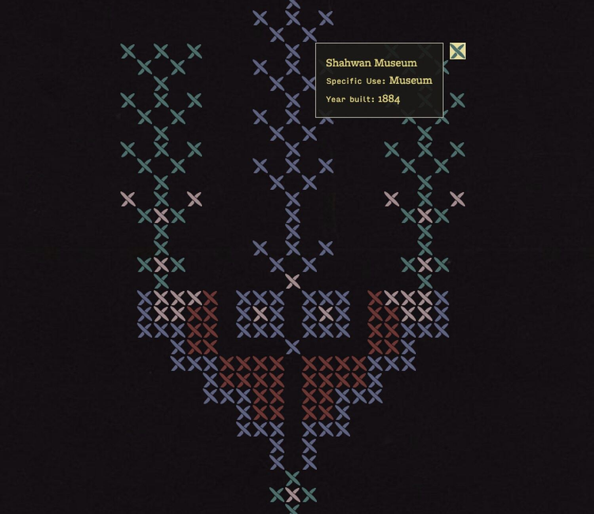
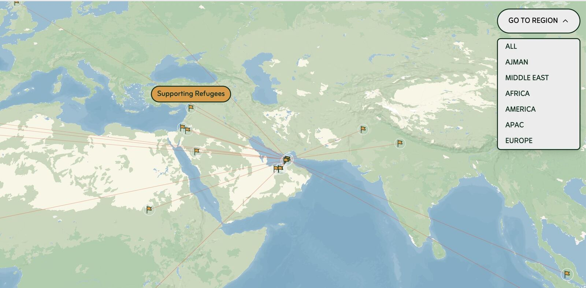
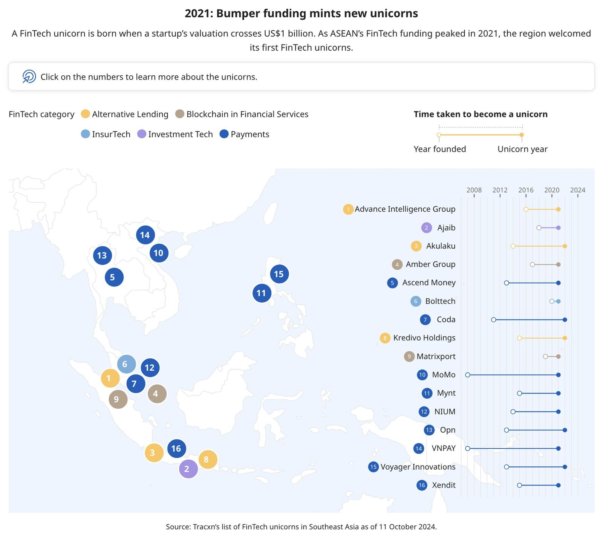
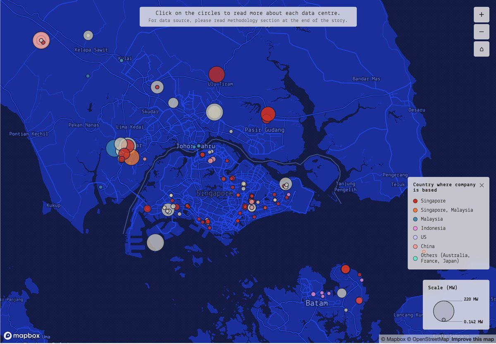
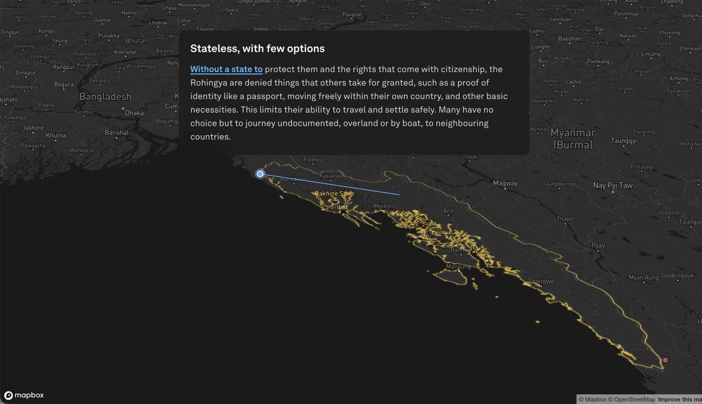
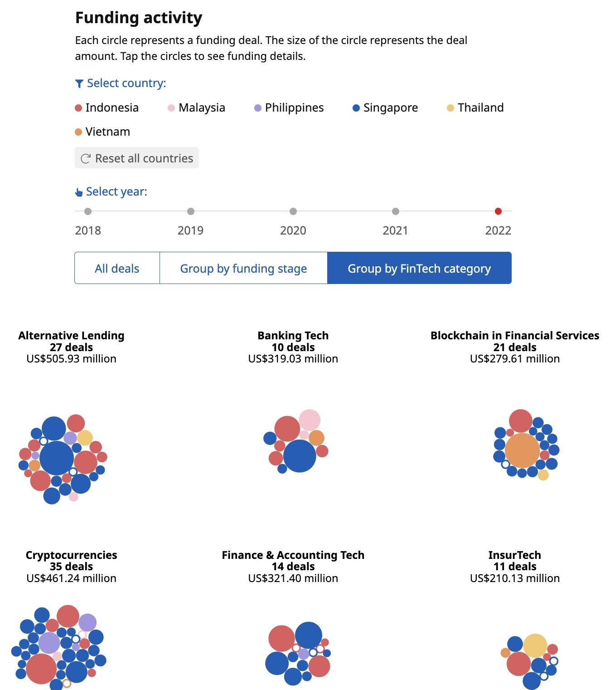
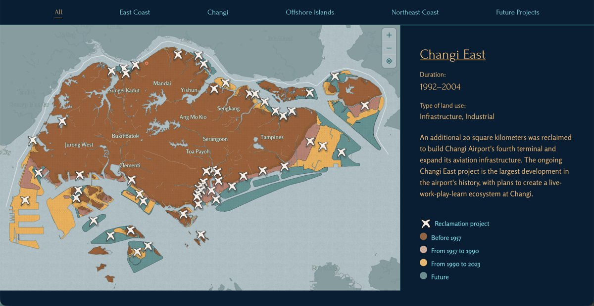
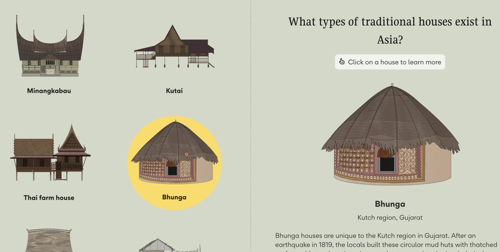

This is my collection of work with
Kontinentalist
from August 2019 to August 2026. I started as a data visualisation engineer and left 7
years later leading
the Experiments and Research team
and the technical side of client projects.

Gaza LivesDestroyed cultural sites, charted in the Qowara tatreez
pattern

The A+U MapazineA world map of the university’s projects, with a region
filter

FinTech in ASEANSoutheast Asia’s fintech unicorns on a map and timeline

Thirsty, Tired, WiredData centres around Singapore, Johor and Batam, sized by
megawatts

Abandoned at SeaA refugee boat route, drawn as you scroll

FinTech in ASEANFunding deals as bubbles, grouped by category

Terraforming SingaporeSingapore’s reclaimed land, by era

Wisdom of traditional architectureTraditional houses across Asia, explained
one by one
Picture: 90 diamonds in a grid, one for each story,
project or talk.
a look back
Each ✦ is a project I worked on at Kontinentalist.
I code data visualisations, maps, dashboards and microsites
I wrangle data and project timelines
I collab with designers, writers and researchers
I teach and facilitate data storytelling workshops
Hover a ✦ to peek inside
Chart: a timeline from 2019 to 2026 with a row each for in-house, partner and client
builds, and bars for my three job titles underneath. The early years, 2019 to 2021,
are mostly grey in-house diamonds.
#growth as a developer
I taught myself data visualisation on the job, one project at a time. I started out
building small in-house stories. As the builds grew into microsites, dashboards and
tools, I grew too, into leading front-end and then helping lead the team.
Chart: diamonds grouped by kind of work, with award winners in gold. In-house:
30 builds,
7 won awards. Partner:
16 builds,
9 won. Client:
21 builds, none won.
awards season
Our work won 24 awards across
16 projects, mostly partner stories. Partners
like UNHCR, Doctors Without Borders and Visualising Palestine brought data we couldn’t
find alone. It taught me that the best stories come from working with the communities
and organisations closest to them.
GoldAbandoned at Sea IIB 2022
GoldStuck in the System WAN-IFRA 2023
SilverA Woman’s World IIB 2023
BronzeGaza Lives IIB 2024
Chart: diamonds grouped by kind of work with the 21 client builds in blue and 16
partner stories in green; the six UOB builds are larger.
clients came back
Clients and partners trusted us with their builds. Most lived on someone else’s
website, so I met their tech team early, planned around their stack, kept the project
on track and set up content they could edit without touching the code. Notable
clients:
UOB, one of Southeast Asia’s largest banks, for 5 editions of its yearly
fintech report
AEON Collective, who presented the climate chart I built at COP26
GI-TOC, for four projects, three of which I coded
Chart: the timeline with only the talks row highlighted: 23 talks and workshops from
2021 to 2025.
then, I started teaching
I helped pioneer
Kontinentalist’s paid data storytelling workshop. I co-designed the curriculum, ran logistics and later revamped it. Over seven runs,
we trained 140+ people. I also gave 23 talks and
workshops, including a main-stage talk at DataFest Tbilisi.
Picture: all 90 diamonds in colour by kind of work.
how do you say goodbye to 7 years?
This page is my love letter to my first developer job, and to the talented designers,
researchers and writers I worked with over seven years.
Every project here was a team effort. I was mostly the developer, and where a project
needed it, I also wrangled data and managed the timeline. Open any of them to see what I
built.
Fieldnotes from Konti
I started Fieldnotes from Konti, a self-initiated project that turned my reflections
and handover notes into a digital resource for incoming developers and colleagues.
I also wrote for
Kawan, Kontinentalist’s community space, on what goes into our stories and how to read
and work with data.